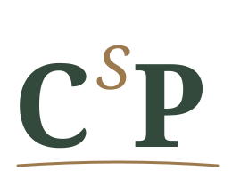
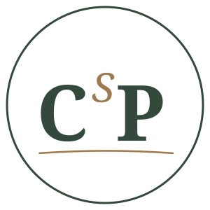
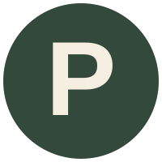

C and P — Colombo, Philosophy — stand upright and solid, bookending the mark. S — School, the connective middle term — sits smaller, raised, and italic, like a note offered mid-conversation. The gently curved rule beneath ties the three into one form: an open, unhurried line standing in for an open book, a horizon, or a considered conclusion — nothing literal, nothing spelled out.
Built from the site's own Literata typeface rather than hand-drawn shapes, so it renders identically wherever that font is available. For print or handoff to a printer, convert the text to outlines first so it doesn't depend on the font being installed.

The brief requires the mark to hold up with no color at all — same file, currentColor only.
For social profile photos, certificates, embossed signage, and stamps — anywhere a contained, circular mark reads better than the loose horizontal one.

At true favicon size the three-letter mark blurs into mush, so this is a deliberate, scale-specific simplification — not a competing logo. Bold "P" in Work Sans, not Literata, because sans-serif holds up better this small.

For website headers, letterhead, and wide signage.
For social avatars, certificates, and narrow spaces (mobile header, business card).